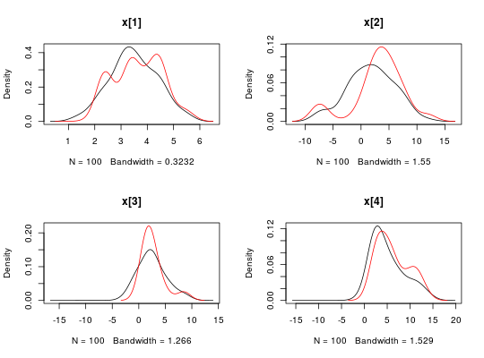
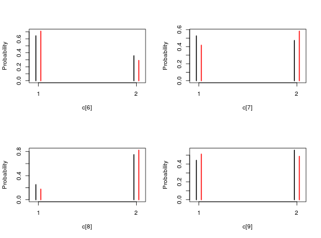
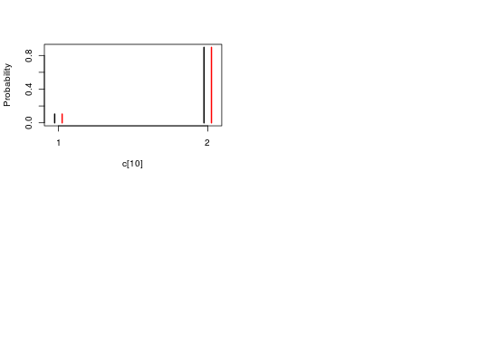
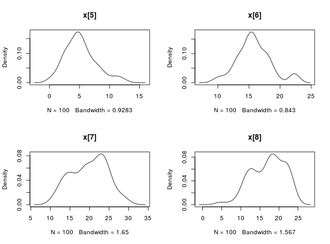
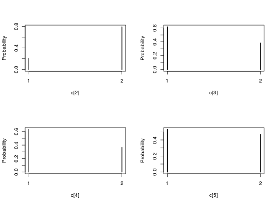

Objects for representing SMC output.
A smcarray object is used by the
biips_smc_samples function to represent SMC output or particles
of a given variable.
A smcarray.fsb object is a named list of smcarray objects with
different types of monitoring for the same variable. Members in this list
have names f (filtering), s (smoothing) or b (backward
smoothing).
A smcarray.fsb.list object is a named list of smcarray.fsb
objects for different monitored variables. It might also contain a member
named log_marg_like with an estimate of the log marginal likelihood.
The methods apply identically to smcarray, smcarray.fsb or
smcarray.fsb.list objects and return a named list with the same named
members as the input object.
is.smcarray(object) is.smcarray.fsb(object) is.smcarray.fsb.list(object) biips_diagnosis(object, ...) # S3 method for smcarray biips_diagnosis(object, ess_thres = 30, quiet = FALSE, ...) # S3 method for smcarray.fsb biips_diagnosis(object, type = "fsb", quiet = FALSE, ...) # S3 method for smcarray.fsb.list biips_diagnosis(object, type = "fsb", quiet = FALSE, ...) biips_summary(object, ...) # S3 method for smcarray biips_summary(object, probs = c(), order = ifelse(mode, 0, 1), mode = all(object$discrete), ...) # S3 method for smcarray.fsb biips_summary(object, ...) # S3 method for smcarray.fsb.list biips_summary(object, ...) biips_table(x, ...) # S3 method for smcarray biips_table(x, ...) biips_density(x, ...) # S3 method for smcarray biips_density(x, bw = "nrd0", ...) # S3 method for smcarray.fsb biips_table(x, ...) # S3 method for smcarray.fsb biips_density(x, bw = "nrd0", adjust = 1, ...) # S3 method for smcarray.fsb.list biips_table(x, ...) # S3 method for smcarray.fsb.list biips_density(x, bw = "nrd0", ...) # S3 method for smcarray summary(object, ...) # S3 method for smcarray.fsb summary(object, ...) # S3 method for smcarray.fsb.list summary(object, ...) # S3 method for smcarray density(x, ...) # S3 method for smcarray.fsb density(x, ...) # S3 method for smcarray.fsb.list density(x, ...)
Arguments
- object, x
- a
smcarray,smcarray.fsborsmcarray.fsb.listobject. - ...
- additional arguments to be passed to the default methods. See
density,table - ess_thres
- integer. Threshold on the Effective Sample Size (ESS). If
all the ESS components are over
ess_thres, the diagnostic is'GOOD', otherwise it is'BAD'. (default=30). - quiet
- logical. Disable message display. (default=
FALSE). - type
- string containing the characters
'f'(fitering),'s'(smoothing) and/or'b'(backward smoothing). Select the corresponding members of the input to be analysed. (default ='fsb'). - probs
- vector of reals. probability levels in ]0,1[ for quantiles.
(default =
c()) - order
- integer. Moment statistics of order below or equal to
orderare returned. (default = 0 if all the components are discrete variables and 1 otherwise) - mode
- logical. Activate computation of the mode, i.e. the most
frequent value among the particles. (default =
TRUEif all the components are discrete variables andFALSEotherwise) - bw
- either a real with the smoothing bandwidth to be used or a string
giving a rule to choose the bandwidth. See
bw.nrd. (default='nrd0') - adjust
- scale factor for the bandwidth. the bandwidth used is actually
adjust*bw. This makes it easy to specify values like ‘half the default’ bandwidth. (default = 1)
Value
The methods apply identically to smcarray, smcarray.fsb or
smcarray.fsb.list objects and return a named list with the same
named members as the input object.
The function is.smcarray returns TRUE if the object is of class smcarray.
The function is.smcarray.fsb returns TRUE if the object
is of class smcarray.fsb.
The function is.smcarray.fsb.list returns TRUE if the
object is of class smcarray.fsb.list.
The method biips_diagnosis prints diagnosis of the SMC output
and returns the minimum ESS value.
The method biips_summary returns univariate marginal
statistics. The output innermost members are objects of class
summary.smcarray. Assuming dim is the dimension of the
variable, the summary.smcarray object is a list with the following
members:
The method biips_table returns univariate marginal frequency
tables or probability mass estimates of discrete variables. The output
innermost members are objects of class table.smcarray.
The method biips_density returns univariate marginal kernel
density estimates. The output innermost members are objects of class
density.smcarray.
The method summary is an alias for biips_summary.
The method density is an alias for biips_density.
Details
Assuming dim is the dimension of the monitored variable, a
smcarray object is a list with the members:
- values
- array of dimension
c(dim, n_part)with the values of the particles. - weights
- array of dimension
c(dim, n_part)with the weights of the particles. - ess
- array of dimension
dimwith Effective Sample Sizes of the particles set. - discrete
- array of dimension
dimwith logicals indicating discreteness of each component. - iterations
- array of dimension
dimwith sampling iterations of each component. - conditionals
- lists of the contitioning variables (observations). Its
value is:
- for filtering: a list of dimension
dim. each member is a character vector with the respective conditioning variables of the node array component. - for smoothing/backward_smoothing: a character vector, the same for all the components of the node array.
- for filtering: a list of dimension
- name
- string with the name of the variable.
- lower
- vector with the lower bounds of the variable.
- upper
- vector with the upper bounds of the variable.
- type
- string with the type of monitor (
'filtering','smoothing'or'backward_smoothing').
For instance, if out_smc is a smcarray.fsb.list object, one can
access the values of the smoothing particles for the variable 'x'
with: out_smc$x$s$values.
See also
Examples
modelfile <- system.file('extdata', 'hmm.bug', package = 'rbiips') stopifnot(nchar(modelfile) > 0) cat(readLines(modelfile), sep = '\n')#> var c_true[tmax], x_true[tmax], c[tmax], x[tmax], y[tmax] #> #> data #> { #> x_true[1] ~ dnorm(0, 1/5) #> y[1] ~ dnorm(x_true[1], exp(logtau_true)) #> for (t in 2:tmax) #> { #> c_true[t] ~ dcat(p) #> x_true[t] ~ dnorm(0.5*x_true[t-1]+25*x_true[t-1]/(1+x_true[t-1]^2)+8*cos(1.2*(t-1)), ifelse(c_true[t]==1, 1/10, 1/100)) #> y[t] ~ dnorm(x_true[t]/4, exp(logtau_true)) #> } #> } #> #> model #> { #> logtau ~ dunif(-3, 3) #> x[1] ~ dnorm(0, 1/5) #> y[1] ~ dnorm(x[1], exp(logtau)) #> for (t in 2:tmax) #> { #> c[t] ~ dcat(p) #> x[t] ~ dnorm(0.5*x[t-1]+25*x[t-1]/(1+x[t-1]^2)+8*cos(1.2*(t-1)), ifelse(c[t]==1, 1/10, 1/100)) #> y[t] ~ dnorm(x[t]/4, exp(logtau)) #> } #> }data <- list(tmax = 10, p = c(.5, .5), logtau_true = log(1), logtau = log(1)) model <- biips_model(modelfile, data, sample_data = TRUE)#> * Parsing model in: /home/adrien-alea/Dropbox/workspace/rbiips/inst/extdata/hmm.bug #> * Compiling data graph #> Declaring variables #> Resolving undeclared variables #> Allocating nodes #> Graph size: 169 #> Sampling data #> Reading data back into data table #> * Compiling model graph #> Declaring variables #> Resolving undeclared variables #> Allocating nodes #> Graph size: 180n_part <- 100 out_smc <- biips_smc_samples(model, c('x', 'c[2:10]'), n_part, type = 'fs', rs_thres = 0.5, rs_type = 'stratified')#> * Assigning node samplers #> * Running SMC forward sampler with 100 particles #> |--------------------------------------------------| 100% #> |**************************************************| 10 iterations in 0.01 s#' Manipulate `smcarray.fsb.list` object is.smcarray.fsb.list(out_smc)#> [1] TRUEnames(out_smc)#> [1] "c[2:10]" "x" "log_marg_like"out_smc#> c[2:10] filtering smcarray: #> $mode #> [1] 2 1 1 1 1 2 1 1 1 #> #> Marginalizing over: particle(100) #> #> c[2:10] smoothing smcarray: #> $mode #> [1] 2 1 1 1 1 2 1 1 1 #> #> Marginalizing over: particle(100) #> #> #> x filtering smcarray: #> $mean #> [1] -1.508640 -37.390047 -26.007798 -20.850881 -12.772679 -4.494347 #> [7] -10.791311 -13.190698 -12.650061 -7.623059 #> #> Marginalizing over: particle(100) #> #> x smoothing smcarray: #> $mean #> [1] -1.489706 -37.170345 -26.039191 -21.018500 -13.126739 -4.496751 #> [7] -11.307084 -12.851035 -12.167890 -7.623059 #> #> Marginalizing over: particle(100) #> #> #> Log-marginal likelihood: -36.67733biips_diagnosis(out_smc)#> * Diagnosis of variable: c[2:10] #> Filtering: GOOD #> Smoothing: POOR #> The minimum effective sample size is too low: 23.73158 #> Estimates may be poor for some variables. #> You should increase the number of particles #> .* Diagnosis of variable: x[1:10] #> Filtering: GOOD #> Smoothing: POOR #> The minimum effective sample size is too low: 23.73158 #> Estimates may be poor for some variables. #> You should increase the number of particles #> .biips_summary(out_smc)#> c[2:10] filtering smcarray: #> $mode #> [1] 2 1 1 1 1 2 1 1 1 #> #> Marginalizing over: particle(100) #> #> c[2:10] smoothing smcarray: #> $mode #> [1] 2 1 1 1 1 2 1 1 1 #> #> Marginalizing over: particle(100) #> #> #> x filtering smcarray: #> $mean #> [1] -1.508640 -37.390047 -26.007798 -20.850881 -12.772679 -4.494347 #> [7] -10.791311 -13.190698 -12.650061 -7.623059 #> #> Marginalizing over: particle(100) #> #> x smoothing smcarray: #> $mean #> [1] -1.489706 -37.170345 -26.039191 -21.018500 -13.126739 -4.496751 #> [7] -11.307084 -12.851035 -12.167890 -7.623059 #> #> Marginalizing over: particle(100) #> #>#' Manipulate `smcarray.fsb` object is.smcarray.fsb(out_smc$x)#> [1] TRUEnames(out_smc$x)#> [1] "f" "s"out_smc$x#> filtering smcarray: #> $mean #> [1] -1.508640 -37.390047 -26.007798 -20.850881 -12.772679 -4.494347 #> [7] -10.791311 -13.190698 -12.650061 -7.623059 #> #> Marginalizing over: particle(100) #> #> smoothing smcarray: #> $mean #> [1] -1.489706 -37.170345 -26.039191 -21.018500 -13.126739 -4.496751 #> [7] -11.307084 -12.851035 -12.167890 -7.623059 #> #> Marginalizing over: particle(100) #>biips_diagnosis(out_smc$x)#> * Diagnosis of variable: x[1:10] #> Filtering: GOOD #> Smoothing: POOR #> The minimum effective sample size is too low: 23.73158 #> Estimates may be poor for some variables. #> You should increase the number of particles #> .summ_smc_x <- biips_summary(out_smc$x, order = 2, probs = c(.025, .975)) summ_smc_x#> filtering smcarray: #> $mean #> [1] -1.508640 -37.390047 -26.007798 -20.850881 -12.772679 -4.494347 #> [7] -10.791311 -13.190698 -12.650061 -7.623059 #> #> $var #> [1] 1.063788 9.363511 7.759753 11.085483 8.171776 12.916462 13.122471 #> [8] 8.960142 10.227333 12.231032 #> #> $probs #> [1] 0.025 0.975 #> #> $quant #> $quant$`0.025` #> [1] -3.666211 -45.001873 -31.251752 -26.881451 -18.203003 -13.559880 #> [7] -19.155364 -19.995020 -18.241439 -14.493947 #> #> $quant$`0.975` #> [1] 0.3713801 -25.3407127 -20.7034114 -14.0632920 -7.5391087 0.5754102 #> [7] -5.8828086 -8.2598806 -6.3597635 -0.3459525 #> #> #> Marginalizing over: particle(100) #> #> smoothing smcarray: #> $mean #> [1] -1.489706 -37.170345 -26.039191 -21.018500 -13.126739 -4.496751 #> [7] -11.307084 -12.851035 -12.167890 -7.623059 #> #> $var #> [1] 0.4152341 7.2690745 5.3579327 8.1605705 10.5920510 11.7021601 #> [7] 14.2145637 8.3529812 10.0523904 12.2310322 #> #> $probs #> [1] 0.025 0.975 #> #> $quant #> $quant$`0.025` #> [1] -2.692658 -41.927219 -30.237887 -25.641214 -20.820850 -12.624125 #> [7] -19.261688 -19.452628 -17.928561 -14.493947 #> #> $quant$`0.975` #> [1] -0.5364498 -32.3843350 -21.4153569 -14.5297962 -7.9571128 -0.1619441 #> [7] -5.6249635 -8.5927905 -6.0664977 -0.3459525 #> #> #> Marginalizing over: particle(100) #>dens_smc_x <- biips_density(out_smc$x, bw = 'nrd0', adjust = 1, n = 100) par(mfrow = c(2, 2)) plot(dens_smc_x)is.smcarray.fsb(out_smc[['c[2:10]']])#> [1] TRUEnames(out_smc[['c[2:10]']])#> [1] "f" "s"out_smc[['c[2:10]']]#> filtering smcarray: #> $mode #> [1] 2 1 1 1 1 2 1 1 1 #> #> Marginalizing over: particle(100) #> #> smoothing smcarray: #> $mode #> [1] 2 1 1 1 1 2 1 1 1 #> #> Marginalizing over: particle(100) #>biips_diagnosis(out_smc[['c[2:10]']])#> * Diagnosis of variable: c[2:10] #> Filtering: GOOD #> Smoothing: POOR #> The minimum effective sample size is too low: 23.73158 #> Estimates may be poor for some variables. #> You should increase the number of particles #> .summ_smc_c <- biips_summary(out_smc[['c[2:10]']]) summ_smc_c#> filtering smcarray: #> $mode #> [1] 2 1 1 1 1 2 1 1 1 #> #> Marginalizing over: particle(100) #> #> smoothing smcarray: #> $mode #> [1] 2 1 1 1 1 2 1 1 1 #> #> Marginalizing over: particle(100) #>table_smc_c <- biips_table(out_smc[['c[2:10]']]) par(mfrow = c(2, 2))plot(table_smc_c)#' Manipulate `smcarray` object is.smcarray(out_smc$x$f)#> [1] TRUEnames(out_smc$x$f)#> [1] "values" "weights" "ess" "discrete" "iterations" #> [6] "conditionals" "name" "lower" "upper" "type"out_smc$x$f#> smcarray: #> $mean #> [1] -1.508640 -37.390047 -26.007798 -20.850881 -12.772679 -4.494347 #> [7] -10.791311 -13.190698 -12.650061 -7.623059 #> #> Marginalizing over: particle(100)out_smc$x$s#> smcarray: #> $mean #> [1] -1.489706 -37.170345 -26.039191 -21.018500 -13.126739 -4.496751 #> [7] -11.307084 -12.851035 -12.167890 -7.623059 #> #> Marginalizing over: particle(100)biips_diagnosis(out_smc$x$f)#> * Diagnosis of variable: x[1:10] #> Filtering: GOODbiips_diagnosis(out_smc$x$s)#> * Diagnosis of variable: x[1:10] #> Smoothing: POOR #> The minimum effective sample size is too low: 23.73158 #> Estimates may be poor for some variables. #> You should increase the number of particles #> .biips_summary(out_smc$x$f)#> smcarray: #> $mean #> [1] -1.508640 -37.390047 -26.007798 -20.850881 -12.772679 -4.494347 #> [7] -10.791311 -13.190698 -12.650061 -7.623059 #> #> Marginalizing over: particle(100)biips_summary(out_smc$x$s)#> smcarray: #> $mean #> [1] -1.489706 -37.170345 -26.039191 -21.018500 -13.126739 -4.496751 #> [7] -11.307084 -12.851035 -12.167890 -7.623059 #> #> Marginalizing over: particle(100)par(mfrow = c(2, 2))plot(biips_density(out_smc$x$f))par(mfrow = c(2, 2))plot(biips_density(out_smc$x$s))par(mfrow = c(2, 2))plot(biips_table(out_smc[['c[2:10]']]$f))par(mfrow = c(2, 2))plot(biips_table(out_smc[['c[2:10]']]$s))